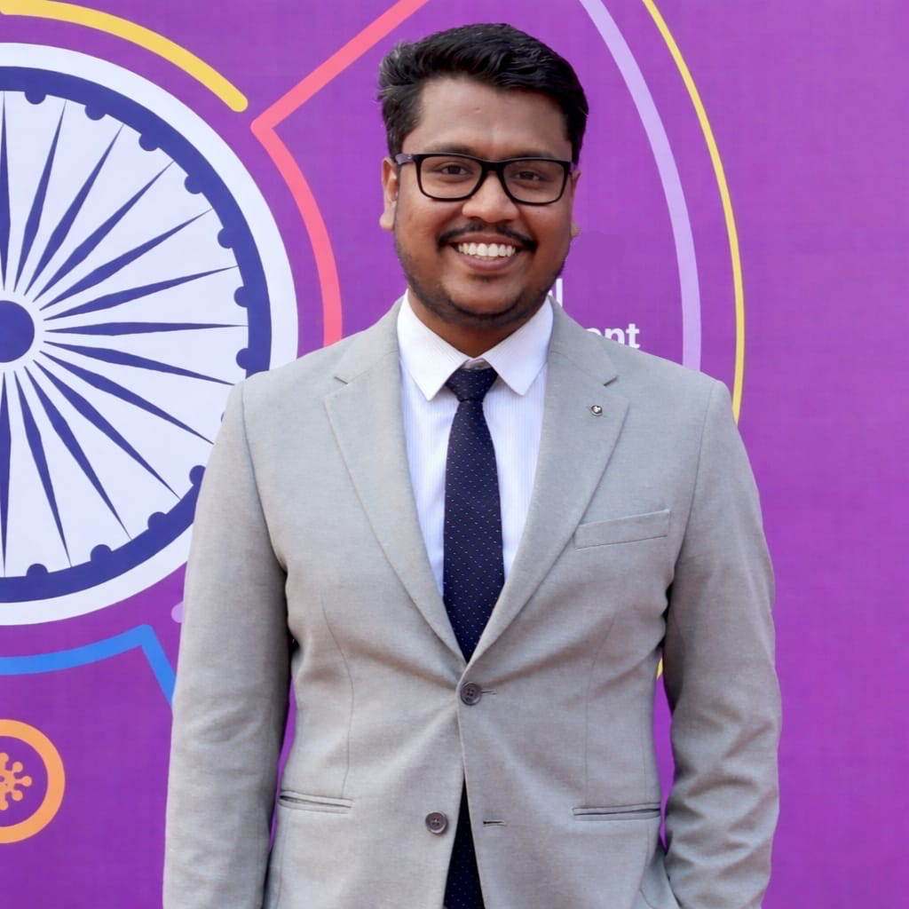

Academic Associate, Operations Management
Indian School of Business
M.Sc. (Mathematics), M.Ed.
I study how mathematics can reason under uncertainty, and how people come to learn it — from neutrosophic decision models and hypergraph spectra to India’s indigenous counting systems.
How my research areas connectSelect an area
Circle size reflects the amount of work in each area; a line means at least one publication spans both.
I’m looking for a PhD where soft computing meets learning: neutrosophic and fuzzy models of cognition and assessment, spectral methods on higher-order (super)hypergraphs, and culturally grounded mathematics education. I bring nine journal articles, eight book chapters, and three years of field and statistical research experience.
I work at the meeting point of mathematics and mathematics education. On the mathematical side, I build decision models that handle truth, falsity and indeterminacy separately, and study Laplacians on higher-order hypergraphs. On the educational side, I examine what students bring to the classroom — anxiety, self-efficacy, cultural ways of counting — and how analytics and AI can respond to it.
I completed an integrated M.Sc.M.Ed. in Mathematics at the Indian Institute of Teacher Education, Gandhinagar, after a B.Sc.B.Ed. at Tripura University. From 2023 to 2025 I worked as a remote pre-doctoral researcher with Prof. Milton Rosa and Prof. Daniel C. Orey at the Universidade Federal de Ouro Preto, Brazil, on ethnomathematics in India. I now support teaching in operations and supply chain management at the Indian School of Business.
My working philosophy is the three Cs: collaboration, creativity and contribution.
Indian School of Business
Indian Institute of Teacher Education, Gandhinagar
Departamento de Educação Matemática, Universidade Federal de Ouro Preto, Brazil
With Prof. Milton Rosa and Prof. Daniel C. Orey on “Mathematics Through Diverse Lenses: Ethnomathematics in India and its Development”.
Indian Institute of Public Administration, New Delhi
Impact assessment of Bhoomi Samman districts for the Department of Land Resources, Ministry of Rural Development. Collected data with SurveyCTO, validated and cleaned a dataset of about 5,000 respondents, and prepared statistical tables for official reporting.
Indian Institute of Public Administration
Forest Rights Act, 2006: an assessment of ground reality in seven Indian states, funded by the National Human Rights Commission.
Teaching Assistant, Indian School of Business (2026)
Teaching Assistant, Central Institute of Education, University of Delhi (Fall 2025)
Mentoring and outreach
Invited talk and press
Selected schools and workshops
Editorial and review
Awards
Memberships
Collaborators and mentors
Responsibilities
Indian Institute of Teacher Education, Gandhinagar
CGPA 7.27/10. M.Sc. dissertation: Algebra of Bi-complex Numbers. M.Ed. dissertation: Mathematical Anxiety, Need for Cognition and General Self-Efficacy as Predictors of Mathematics Level Selection among CBSE Students.
Tripura University (A Central University), Agartala
CGPA 6.85/10. Dissertation: A Study on Certain Diophantine Equations and its Application in the Field of Traffic Network.
SAS Nagar, Punjab, India